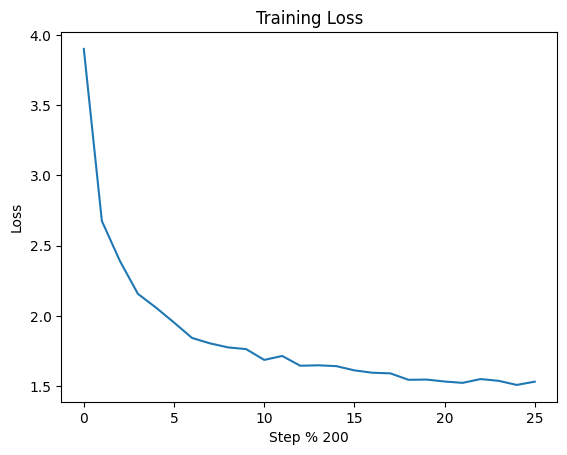

Train a miniGPT language model with JAX#
This tutorial demonstrates how to use JAX, Flax NNX and Optax for language model (pre)training using data and tensor parallelism for Single-Program Multi-Data).
Here, you will learn how to:
Define the miniGPT model with Flax and JAX automatic parallelism
Load and preprocess the dataset
Create the loss and training step functions
Profile for hyperparameter tuning
Setup#
We will use Tiktoken for tokenization and Grain for data loading.
import jax
Get the TinyStories dataset from Hugging Face. We only use the training split.
!wget https://huggingface.co/datasets/roneneldan/TinyStories/resolve/main/TinyStories-train.txt?download=true -O TinyStories-train.txt
Import the necessary modules, including JAX NumPy, Flax NNX, Optax, Grain, pandas, and Tiktoken:
import jax
import jax.numpy as jnp
import flax.nnx as nnx
import optax
from dataclasses import dataclass
from jax.sharding import PartitionSpec as P, reshard
import grain.python as pygrain
import pandas as pd
import tiktoken
import time
Define the miniGPT model with Flax and JAX automatic parallelism#
Leveraging JAX’s data and tensor parallelism#
One of the most powerful features of JAX is device parallelism for SPMD.
The data parallelism technique enables, for example, the training data to run via multiple parts (this is called sharding) - batches - in parallel and simultaneously across different devices, such as GPUs and Google TPUs. This allows to use larger batch sizes to speed up training.
Tensor parallelism allows us to split the model parameter tensors across several devices (sharding model tensors).
You can learn more about the basics of JAX parallelism in more detail in the Introduction to parallel programming on the JAX documentation site.
In this example, we’ll utilize a 4-way data parallel and 2-way tensor parallel setup.
Making a mesh#
To shard data in JAX, we must create a jax.sharding.Mesh. A mesh is a multidimensional NumPy array of JAX devices, where each axis of the mesh has a name, such as 'x' or 'y'. This will help encapsulate the information about the TPU resource organization for distributing computations across the devices. We’ll make a mesh with two axes: batch for data parallelism and model for model parallelism.
To do this, we call jax.make_mesh with the size and name of each axis. The call below to jax.set_mesh returns a context manager, which we’d use if we wanted to only set the current mesh temporarily. As we’ll use the same mesh for all the code in this notebook, however, we can ignore the context manager.
_ = jax.set_mesh(jax.make_mesh((2, 1), ('batch', 'model')))
We will use the GPT-2 tokenizer from the Tiktoken library:
tokenizer = tiktoken.get_encoding("gpt2")
To leverage model parallelism, we need to instruct the JAX compiler how to shard the model tensors across the TPU devices. To do this, we initialize the model’s variables with the metadata out_sharding set to a PartitionSpec. A PartitionSpec is just a wrapper around a tuple of names. The elements of this tuple should describe how an input dimension is partitioned across mesh dimensions. For example, if out_sharding=P('x', 'y') the first dimension of data will be sharded across x axis of the mesh, and the second one across the y axis.
class TransformerBlock(nnx.Module):
""" A single Transformer block.
Each Transformer block processes input sequences via self-attention and feed-forward networks.
Args:
embed_dim (int): Embedding dimensionality.
num_heads (int): Number of attention heads.
ff_dim (int): Dimensionality of the feed-forward network.
rngs (flax.nnx.Rngs): A Flax NNX stream of JAX PRNG keys.
rate (float): Dropout rate. Defaults to 0.1.
"""
def __init__(self, embed_dim: int, num_heads: int, ff_dim: int, *, rngs: nnx.Rngs, rate: float = 0.1):
self.mha = nnx.MultiHeadAttention(num_heads=num_heads,
in_features=embed_dim,
kernel_metadata={'out_sharding': P(None, 'model')},
bias_metadata={'out_sharding': P('model')},
rngs=rngs)
self.dropout1 = nnx.Dropout(rate=rate, rngs=rngs)
self.layer_norm1 = nnx.LayerNorm(epsilon=1e-6,
num_features=embed_dim,
scale_metadata={'out_sharding': P('model')},
bias_metadata={'out_sharding': P('model')},
rngs=rngs)
self.mlp = nnx.Sequential(
nnx.Linear(in_features=embed_dim,
out_features=ff_dim,
kernel_metadata={'out_sharding': P(None, 'model')},
bias_metadata={'out_sharding': P('model')},
rngs=rngs),
nnx.relu,
nnx.Linear(in_features=ff_dim,
out_features=embed_dim,
kernel_metadata={'out_sharding': P(None, 'model')},
bias_metadata={'out_sharding': P('model')},
rngs=rngs),
nnx.Dropout(rate=rate, rngs=rngs))
self.layer_norm2 = nnx.LayerNorm(epsilon=1e-6,
num_features=embed_dim,
scale_metadata={'out_sharding': P('model')},
bias_metadata={'out_sharding': P('model')},
rngs=rngs)
# Apply the Transformer block to the input sequence.
def __call__(self, inputs):
# Instantiate the causal attention mask.
attention_output = self.mha(
inputs_q=inputs,
is_causal=True,
decode=False
)
attention_output = self.dropout1(attention_output)
out1 = self.layer_norm1(inputs + attention_output)
ffn_output = self.mlp(out1)
return self.layer_norm2(out1 + ffn_output)
class TokenAndPositionEmbedding(nnx.Module):
""" Combines token embeddings (words in an input sentence) with
positional embeddings (the position of each word in a sentence).
Args:
maxlen (int): Matimum sequence length.
vocal_size (int): Vocabulary size.
embed_dim (int): Embedding dimensionality.
rngs (flax.nnx.Rngs): A Flax NNX stream of JAX PRNG keys.
"""
def __init__(self, maxlen: int, vocab_size: int, embed_dim: int, *, rngs: nnx.Rngs):
# Initialize token embeddings (using `flax.nnx.Embed`).
# Each unique word has an embedding vector.
self.token_emb = nnx.Embed(num_embeddings=vocab_size, features=embed_dim, rngs=rngs)
# Initialize positional embeddings (using `flax.nnx.Embed`).
self.pos_emb = nnx.Embed(num_embeddings=maxlen, features=embed_dim, rngs=rngs)
# Takes a token sequence (integers) and returns the combined token and positional embeddings.
def __call__(self, x):
# Generate a sequence of positions for the input tokens.
positions = jnp.arange(0, x.shape[1])[None, :]
# Look up the positional embeddings for each position in the input sequence.
position_embedding = self.pos_emb(positions)
# Look up the token embeddings for each token in the input sequence.
token_embedding = self.token_emb(x, out_sharding=jax.typeof(x).sharding)
# Combine token and positional embeddings.
return token_embedding + position_embedding
class MiniGPT(nnx.Module):
""" A miniGPT transformer model, inherits from `flax.nnx.Module`.
Args:
maxlen (int): Maximum sequence length.
vocab_size (int): Vocabulary size.
embed_dim (int): Embedding dimensionality.
num_heads (int): Number of attention heads.
feed_forward_dim (int): Dimensionality of the feed-forward network.
num_transformer_blocks (int): Number of transformer blocks. Each block contains attention and feed-forward networks.
rngs (nnx.Rngs): A Flax NNX stream of JAX PRNG keys.
"""
# Initialize miniGPT model components.
def __init__(self, maxlen: int, vocab_size: int, embed_dim: int, num_heads: int, feed_forward_dim: int, num_transformer_blocks: int, rngs: nnx.Rngs):
# Initiliaze the `TokenAndPositionEmbedding` that combines token and positional embeddings.
self.embedding_layer = TokenAndPositionEmbedding(
maxlen, vocab_size, embed_dim, rngs=rngs
)
# Create a list of `TransformerBlock` instances.
# Each block processes input sequences using attention and feed-forward networks.
self.transformer_blocks = nnx.Sequential(*[TransformerBlock(
embed_dim, num_heads, feed_forward_dim, rngs=rngs
) for _ in range(num_transformer_blocks)])
# Initialize the output `flax.nnx.Linear` layer producing logits over the vocabulary for next-token prediction.
self.output_layer = nnx.Linear(in_features=embed_dim,
out_features=vocab_size,
kernel_metadata={'out_sharding': P(None, 'model')},
bias_metadata={'out_sharding': P('model')},
rngs=rngs)
def __call__(self, inputs):
# Pass the input tokens through the `embedding_layer` to get token embeddings.
x = self.embedding_layer(inputs)
# Apply each transformer block sequentially to the embedded input
x = self.transformer_blocks(x)
# Pass the output of the transformer blocks through the output layer,
# and obtain logits for each token in the vocabulary (for next token prediction).
return reshard(self.output_layer(x), jax.typeof(inputs).sharding)
def sample_from(self, logits):
logits, indices = jax.lax.top_k(logits, k=top_k)
logits = nnx.softmax(logits)
return jax.random.choice(jax.random.PRNGKey(0), indices, p=logits)
@nnx.jit(donate_argnums=(1,))
def generate_step(self, padded_tokens, sample_index):
logits = self(padded_tokens)
next_token = self.sample_from(logits[0][sample_index])
return next_token
def generate_text(self, max_tokens, start_tokens):
generated = []
for i in range(max_tokens):
sample_index = len(start_tokens) + len(generated) - 1
padded_tokens = jnp.array((start_tokens + generated + [0] * (maxlen - len(start_tokens) - len(generated))))[None, :]
next_token = int(self.generate_step(padded_tokens, sample_index))
if next_token == tokenizer.encode('<|endoftext|>', allowed_special={'<|endoftext|>'})[0]:
break
generated.append(next_token)
return tokenizer.decode(start_tokens + generated)
# Creates the miniGPT model with 4 transformer blocks.
def create_model(rngs):
return MiniGPT(maxlen, vocab_size, embed_dim, num_heads, feed_forward_dim, num_transformer_blocks=4, rngs=rngs)
Set some hyperparameters.
vocab_size = tokenizer.n_vocab
num_transformer_blocks = 8
maxlen = 256
embed_dim = 256
num_heads = 8
feed_forward_dim = 256
batch_size = 144
num_epochs = 1
top_k = 10
Loading and preprocessing the data#
Data loading and preprocessing with Grain.
@dataclass
class TextDataset:
data: list
maxlen: int
def __len__(self):
return len(self.data)
def __getitem__(self, idx: int):
# Use Tiktoken for tokenization
encoding = tokenizer.encode(self.data[idx], allowed_special={'<|endoftext|>'})[:self.maxlen] # Tokenize and truncate
return encoding + [0] * (self.maxlen - len(encoding)) # Pad to maxlen
def load_and_preprocess_data(file_path, batch_size, maxlen):
with open(file_path, 'r') as f:
text = f.read()
stories = text.split('<|endoftext|>')
stories = [story+'<|endoftext|>' for story in stories if story.strip()]
df = pd.DataFrame({'text': stories})
data = df['text'].dropna().tolist()
dataset = TextDataset(data, maxlen)
sampler = pygrain.IndexSampler(
len(dataset),
shuffle=False,
seed=42,
shard_options=pygrain.NoSharding(),
num_epochs=num_epochs,
)
dl = pygrain.DataLoader(
data_source=dataset,
sampler=sampler,
operations=[pygrain.Batch(batch_size=batch_size, drop_remainder=True)],
)
return dl
text_dl = load_and_preprocess_data('TinyStories-train.txt', batch_size, maxlen)
Defining the loss function and training step function#
# Defines the loss function using `optax.softmax_cross_entropy_with_integer_labels`.
def loss_fn(model, batch):
logits = model(batch[0])
loss = optax.softmax_cross_entropy_with_integer_labels(logits=logits, labels=batch[1]).mean()
return loss, logits
# Define the training step with the `flax.nnx.jit` transformation decorator.
@nnx.jit(donate_argnums=(0, 1, 3))
def train_step(model: MiniGPT, optimizer: nnx.Optimizer, metrics: nnx.MultiMetric, batch):
grad_fn = nnx.value_and_grad(loss_fn, has_aux=True)
(loss, logits), grads = grad_fn(model, batch)
metrics.update(loss=loss, logits=logits, lables=batch[1])
optimizer.update(model, grads)
Training the model#
For data parallelism, we must shard the training data along the batch axis. To do this, we can use jax.device_put, which takes a PartitionSpec of how to shard its argument. We are also using the jax.vmap transformation to produce the target sequences faster.
model = create_model(rngs=nnx.Rngs(0))
optimizer = nnx.Optimizer(model, optax.adam(1e-3), wrt=nnx.Param)
metrics = nnx.MultiMetric(
loss=nnx.metrics.Average("loss"),
)
rng = jax.random.PRNGKey(0)
start_prompt = "Once upon a time"
start_tokens = tokenizer.encode(start_prompt)[:maxlen]
model.generate_text(maxlen, start_tokens)
'Once upon a timefect666PA carrier Louisiana denying►Files Mist tooltipbroken explo({666 Mens reprFiles Amit Sons explouriesodo explocmd termination �{\\isans veins repr Tup Into terminationaudisansisans Cabinetdrivenbrokencmd tortured({isans Pall presum veins McCabe({({ Marlins terminationmananger dialogcmd termination explo brink ending SorcererHam reprications scattered Anna emblemisans infiltr Iranian Parkinsonelectric prin Sorcerergravityotor CLASS Kus({ Carm crest ExitHash terminationcmduriescmd 408 CLASSseys total technologiesoleon({ giftednette prinJacksonо�({ Anna674 408 "-brokenо� 36 DeVos Hound ratt targeted McCabe ample scattered gloveelectric Accord targeted Cabinet materially Option Kosovo blururies targetedHashcakes 408 pringravity pressedisans Claraidayssettinguries Wagner Rand explo \'entialbroken infiltr lottery Shatteredisansisans({ Untgravity62 terminationcmd Houndisans CLASSisans princesHash prin784 Thronesgravity targeted Parkinsonbroken Annafect grabs Addiction Carm targeted lottery CISisans CLASS gifted gifted Coldgravity StudentsTemporousUncommon Thrones incentivesisansisansisans({broken Carm Randisansisanselectric prinJacksonnox giftedications theirFilesExploregravity targeted Thrones Carm MG ParkinsonSurecakes incentivesmanncakes Yin sponsoredaurusudicrousの� agendaisansbasselectric desolategravity targeted aversionisans criminalmbudsman Thrones Carmisans Grassley technologies collectedisans threatened RISWithNoracticalNetwork Cabinet Balance Culture MAPHave wins subduedisans ClaraWithNo Clara Judges Judges Judges'
metrics_history = {
"train_loss": [],
}
prep_target_batch = jax.vmap(
lambda tokens: jnp.concatenate((tokens[1:], jnp.array([0])))
)
step = 0
for epoch in range(num_epochs):
start_time = time.time()
for batch in text_dl:
if len(batch) % len(jax.devices()) != 0:
continue # skip the remaining elements
input_batch = jnp.stack(batch).T
target_batch = prep_target_batch(input_batch)
train_step(
model,
optimizer,
metrics,
jax.device_put(
(input_batch, target_batch), P("batch", None)
),
)
if (step + 1) % 200 == 0:
for metric, value in metrics.compute().items():
metrics_history[f"train_{metric}"].append(value)
metrics.reset()
elapsed_time = time.time() - start_time
print(
f"\n\nStep {step + 1}, Loss: {metrics_history['train_loss'][-1]}, Elapsed Time: {elapsed_time:.2f} seconds"
)
start_time = time.time()
print("Generated text:")
print(model.generate_text(maxlen, start_tokens))
step += 1
# Final text generation
print("Final generated text:")
generated_text = model.generate_text(maxlen, start_tokens)
/home/samanklesaria/flax/.venv/lib/python3.13/site-packages/jax/_src/interpreters/mlir.py:1272: UserWarning: Some donated buffers were not usable: int32[72,256], int32[72,256].
See an explanation at https://docs.jax.dev/en/latest/faq.html#buffer-donation.
warnings.warn("Some donated buffers were not usable:"
Step 200, Loss: 3.89994478225708, Elapsed Time: 102.04 seconds
Generated text:
Once upon a time, there was a little girl named Lily. She loved to play with her mommy. She wanted to play with her mommy's mommy, but it.
One day, Lily's mommy said, "I want to play with her mommy, "I want to play with her mommy's mommy's mommy's mommy.
One day, "I can't want to the toy. Lily's mommy's mommy's mommy's mommy's mommy's mommy's mommy's mommy's mommy's mommy's mommy's mommy's mommy's mommy's mommy's mommy's mommy's mommy's mommy's mommy's mommy.
Lily's mommy's mommy's mommy's mommy's mommy's mommy's mommy's mommy's mommy. Lily's mommy's mommy's mommy's mommy's mommy.
Step 400, Loss: 2.675539493560791, Elapsed Time: 80.92 seconds
Generated text:
Once upon a time, there was a little girl named Lily. She loved to play outside and explore the world around the forest. One day, she saw a big, she saw a big tree. She was so she wanted to play with it.
The little girl was so she asked her mom if she could go home. She said, "I want to play with the tree. I can help you want to play with me."
The little girl was so happy and she could not want to play with her mom. She was so happy. She was so happy to make her mom and said, "Thank you, I'm sorry, I'm sorry, I'm sorry, I love you, I'm sorry for you, I'm sorry, I'm sorry, I love you. I love you, I'm sorry, and I'm sorry. I love you, and you.
The little girl was so happy.
Step 600, Loss: 2.3911643028259277, Elapsed Time: 81.46 seconds
Generated text:
Once upon a time, there was a little girl named Lily. She was very happy and loved to play with her friends. One day, Lily's mommy's mommy said, "Mommy, can't have a new friend, Lily, Lily. I have a lot of fun playing with me."
Lily was very happy and Lily's mommy said, "No, Lily. I want to play with your toys. You can't want to play with me."
Lily's mommy said, "I want to play with me." Lily. She said, "No, it's mommy. I want to play with you."
Lily was sad and Lily said, "Thank you, "No, Lily. You can't be fun."
Lily and Lily went to the park. She said, "I want to play with you. I can't be fun."
Lily and Lily was sad. She said, "Thank you, Lily. I like your friends. I love you." Lily and said, "Thank you, Lily. I love you, Lily, Lily. I love you."
Step 800, Loss: 2.1568212509155273, Elapsed Time: 84.00 seconds
Generated text:
Once upon a time, there was a little girl named Lily. She loved to play outside and play with her friends. One day, Lily's friends went to the park to play. They saw a big tree with a big tree.
Lily wanted to play with her friends. She asked her friends to help her. Lily said, "I want to play with you. You can play with me."
Lily was sad, but she didn't want to play with her friends. She said, "No, Lily. I want to play with you. I want to play with you. But you can't have fun."
Lily felt sad and sad. She said, "No, Lily. I want to play with my friends. I want to play with you."
Lily felt sad and sad. She said, "I'm sorry, Lily. I didn't mean to be mean to play with me."
Lily was sad and said, "I'm sorry, Lily. I'm sorry, Lily. I didn't mean to play with you. I'm sorry. I'm sorry. I didn't mean to do not mean to share.
Lily was sad. She said, "I'm sorry. I did not mean! Judges Judges Judges
Step 1000, Loss: 2.059108018875122, Elapsed Time: 83.53 seconds
Generated text:
Once upon a time, there was a little girl named Lily. She loved to play outside and play outside. One day, she saw a big, shiny rock in the grass. She wanted to play with it, but it was too big.
Lily asked her mom if she could play with it. She said yes, and she was so happy. She said, "I want to play with you, but it is too high."
Lily was sad and didn't want to play with her friends. She wanted to play with her friends to play with her friends. She said, "No, it is mine. I want to play with you."
Lily was sad and wanted to play with her friends. She said, "I don't want to play with my rock. I want to play with you."
Lily thought for a moment and then said, "I want to play with me. I want to play with you."
Lily was happy to have a new friend. She played with her friends and played together.
Step 1200, Loss: 1.9529250860214233, Elapsed Time: 80.09 seconds
Generated text:
Once upon a time, there was a little girl named Lily. She loved to play with her toys and her friends. One day, Lily's friend Billy came to visit. Billy asked Billy if they could play with Lily said yes, but Lily didn't want to play with her.
Lily's friend asked, "Can we play with me?" Lily said, "Sure, but first, let's play together."
They played together and had fun. They played tag and had fun. Lily was happy and said, "Thank you for helping me."
Lily and her friends played together and had a lot of fun. They played together and had fun. They had so much fun.
Step 1400, Loss: 1.8431745767593384, Elapsed Time: 77.28 seconds
Generated text:
Once upon a time, there was a little girl named Lily. She loved to play with her toys and her toys. One day, she saw a big, shiny red car. She wanted to play with it, but she was too fast. She asked her mommy to help her.
Her mommy came over and said, "Lily, you are very nice. You are a good friend."
Lily was happy to have found a new friend. She said, "I love you, Lily. You can play with your toys."
Lily was happy and said, "Thank you, Mommy. You are a good friend."
Lily felt happy and proud. She said, "Thank you, Mommy. I love you."
Step 1600, Loss: 1.804516077041626, Elapsed Time: 82.44 seconds
Generated text:
Once upon a time, there was a little girl named Lily. She loved to play with her toys and eat. One day, she went to the park with her mom. She saw a big slide and wanted to go up the slide. She ran to the slide and climbed up the ladder.
"Mom, can I go on the slide?" she asked.
"Sure, but be careful. I want to climb the slide down and see what is the slide. It is very high and low. It is very fast and hard.
Lily was sad and angry. She wanted to go on the slide down and see the slide. She ran to the slide and ran to the slide. She slid down the slide and slid down the slide.
"Mom, can I go on the slide?" she asked.
"Of course, Lily. Let's go down the slide and see the slide down the slide. But it is too high and the slide is too high. It is too high for the top of the slide. It is very high and low.
"Wow, Lily, this is so happy!" she said. "It's a good idea. Let's go on the slide and see the slide."
Lily and her mom went! Judges Judges Judges
Step 1800, Loss: 1.775789499282837, Elapsed Time: 82.12 seconds
Generated text:
Once upon a time, there was a little girl named Lily. She loved to play outside in the sunshine. One day, she saw a big, red ball in the park. She wanted to play with it, but it was too high.
Lily went to the park and saw a little girl. She wanted to play with her ball. She ran to her mom and said, "Mom, can I play with you?"
Her mom smiled and said, "Of course, Lily. Let's play hide and seek and seek." Lily was happy and ran around the park.
But then, Lily's mom came to the park. She saw the ball and said, "Lily, you are hiding in the park. You are very fast and you are not too far away."
Lily felt sad and sad. She didn't want to play with the ball. She wanted to play with the ball, but she knew she had to be careful.
Step 2000, Loss: 1.7637733221054077, Elapsed Time: 80.70 seconds
Generated text:
Once upon a time, there was a little girl named Lily. She loved to play with her toys and her friends. One day, Lily's mom asked her to help her clean the room. Lily didn't want to clean up the room, but she didn't want to.
Lily's mom said, "Lily, you need to clean your toys. You need to clean your toys and make your toys."
Lily was sad and said, "Okay, Mommy. I will help you clean my toys."
Her mom smiled and said, "Thank you, Lily. You are a good helper."
Lily was happy and said, "Thank you, Mommy. I love my toys."
Step 2200, Loss: 1.6868634223937988, Elapsed Time: 80.64 seconds
Generated text:
Once upon a time there was a little girl named Lily. She was very hungry and wanted to eat something yummy. One day, she saw a big, juicy apple. She wanted to eat it, but she didn't know what to do.
Suddenly, she heard a loud noise. It was a big, scary monster! Lily was scared and didn't know what to do. She ran to the monster and tried to grab the apple from her. But the monster was too fast and Lily was scared.
The monster ran away and Lily was scared. She ran away and never stole the apple again. Lily was sad and scared. She ran away from the monster and never came back.
Step 2400, Loss: 1.7149300575256348, Elapsed Time: 81.23 seconds
Generated text:
Once upon a time, there was a little girl named Lily. She loved to play with her toys. One day, she found a big, shiny rock. It was so pretty! Lily was so happy and she ran to show her mom.
"Look, Mommy! I found a big rock!" Lily said. "Wow, Lily, that's so pretty!"
Her mom smiled and said, "Yes, Lily! That's a great idea. Let's do it again!"
Lily and her mom went to the park and played on the swings. They played with the rock and the rock. They had so much fun.
After the day, Lily and her mom went to the park. They saw a big, green rock and the rock. Lily was so happy and excited. She ran back to the rock and forth.
"Wow, Lily, this rock is so pretty!" she said. "It's so pretty!"
"Thank you, Lily!" she said. "I love you!"
Step 2600, Loss: 1.6453367471694946, Elapsed Time: 79.89 seconds
Generated text:
Once upon a time, there was a little girl named Lily. She loved to play outside in the sunshine. One day, she saw a big, shiny rock. She wanted to pick it up, so she asked her mom if she could pick it. Her mom said yes and gave her a big hug.
Lily was so happy to see the rock. She wanted to help the rock, so she ran up to the rock. She was so excited to see the rock. She ran to the rock and picked it up.
Suddenly, a loud noise. The rock was so loud that Lily's mom came running and saw what was happening. She was very angry and sad. Lily was scared. She ran to her mom and hugged her.
Her mom hugged her and said, "Don't worry, Lily. We can buy the rock for you. We can make it better." Lily was happy and they both enjoyed the rock together.
Step 2800, Loss: 1.6484249830245972, Elapsed Time: 83.47 seconds
Generated text:
Once upon a time, there was a little girl named Lily. She loved to play with her toys and run around. One day, she saw a big box of toys in the corner. She wanted to play with them, but she was too small.
Lily asked her mom, "Can I play with your toys?" Her mom said, "Yes, but be careful not to break."
Lily played with her toys and had fun. She was happy to play with her toys. She played with her toys and had fun.
But then, she saw a big box in the box. She opened it and saw a big box. She opened it and saw a big box. Inside, she found a toy box. She opened it and found a toy car. She was very happy and excited. She opened the box and found a toy car. She was so happy and she played with it all day.
Step 3000, Loss: 1.6425062417984009, Elapsed Time: 86.50 seconds
Generated text:
Once upon a time, there was a little girl named Lily. She loved to play with her toys and eat yummy food. One day, Lily's mommy said, "Lily, you need to eat dinner." Lily was sad because she didn't want to eat her dinner.
But then, her mommy came outside and saw the mess. She said, "Lily, you need to eat dinner. You need to eat your dinner." Lily felt sad and didn't want to eat dinner.
Mommy said, "Lily, you can't eat dinner tonight. You can eat dinner." Lily was happy and ate her dinner. She ate dinner and ate dinner.
Step 3200, Loss: 1.6124943494796753, Elapsed Time: 80.35 seconds
Generated text:
Once upon a time, there was a little girl named Lucy. She was very excited because she had never seen anything like before. She wanted to go to the store and buy a new toy.
Lucy asked her mom if she could go to the store and buy some new toy. Her mom said yes, but only if Lucy was excited.
So Lucy went to the store and bought a new toy. She was so excited! She bought the new toy and it was so happy.
When Lucy got home, she was so excited! She was so excited! She couldn't wait to get the new toy.
When Lucy got home, she was so excited to see the new toy! She ran to the store and bought it. Lucy was so happy!
The new toy was so excited! She was so excited! She had never seen the new toy before!
Step 3400, Loss: 1.5955651998519897, Elapsed Time: 83.01 seconds
Generated text:
Once upon a time, there was a little girl named Lily. She loved to play with her toys and eat candy. One day, she found a big, shiny penny on the ground. She picked it up and showed it to her mom. Her mom said, "That's a penny, Lily. You can pick it up."
Lily was happy and said, "Thank you, mommy. I love it too!" Her mom smiled and said, "You're welcome, Lily. You're such a good friend." Lily was happy to see her friend and they played together.
Step 3600, Loss: 1.5910497903823853, Elapsed Time: 84.23 seconds
Generated text:
Once upon a time, there was a little girl named Lily. She loved to play outside and explore the world around her. One day, she went for a walk in the park. She saw a big tree with many branches. She wanted to climb it, but she couldn't reach it.
Suddenly, she heard a loud noise. It was a big, scary dog! Lily was scared and ran away. But then, she saw a big, scary dog. The dog was barking and Lily was scared. She ran away and hid behind a tree.
Lily was scared and ran away. She ran back to her mom. She hugged her mom and said, "Don't worry, we can help you."
Her mom hugged her and said, "I will help you. We can help you."
Lily was happy again. She hugged her mom and said, "Thank you, mom. I love you too."
Step 3800, Loss: 1.5452747344970703, Elapsed Time: 76.70 seconds
Generated text:
Once upon a time, there was a little girl named Lily. She loved to play with her toys and her friends. One day, she found a big box in the park. She was so excited to open it! She opened the box and found a big, shiny, shiny rock. She was so happy!
But then, something bad happened. The rock started to shrink! Lily was so sad. She couldn't find her toy. She looked everywhere, but she couldn't find it. She was very sad.
Then, she saw a big, shiny rock. She picked it up and put it in her pocket. She was so happy to have found her toy. She played with it all day and had lots of fun.
Step 4000, Loss: 1.5469205379486084, Elapsed Time: 80.18 seconds
Generated text:
Once upon a time, there was a little girl named Lily. She loved to play with her toys and her friends. One day, she went to the park to play. She saw a big tree and wanted to climb it.
Lily was scared, but she didn't know what to do. She asked her mom, "Can I climb the tree?" Her mom said, "No, Lily. The tree is too high. We can fall."
Lily was sad and said, "Don't worry, I will help you. I will climb the tree." She climbed the tree and reached the top. She was happy to see the tree. She climbed the tree and reached the top. She was happy.
But then, she saw a big tree. She climbed down the tree and climbed the tree. She climbed the tree and reached the top. She was very high. She was scared and tired. She said, "I'm sorry, mom. I didn't know you were too scared. I was just trying to climb the tree. I will help you."
Her mom smiled and said, "I'm sorry, Lily. I was just a little bit more."
Step 4200, Loss: 1.5331416130065918, Elapsed Time: 72.39 seconds
Generated text:
Once upon a time, there was a little girl named Lily. She loved to play with her toys and sing songs. One day, she saw a big, scary monster. The monster was very scary. Lily was scared and ran away.
Lily's mom saw her crying and asked her what was wrong. Lily told her that she wanted to help the monster. Her mom said, "Don't worry, Lily. We can help you find the monster."
Lily was happy to help the monster. She took the monster to the monster and said, "Thank you, mommy. You are very brave." The monster smiled and said, "You are very brave. You are brave."
Lily felt happy and proud. She knew that she could always count on her mom to help her. She knew that even if she was scared, she would always be brave.
Step 4400, Loss: 1.5234174728393555, Elapsed Time: 71.77 seconds
Generated text:
Once upon a time, there was a little girl named Lily. She loved to play with her toys and run around outside. One day, she saw a big, scary dog. The dog was barking and growling. Lily was scared and ran away.
Lily's mommy came to her and said, "Don't worry, Lily. We can go home and find a new home." Lily was so happy and said, "Thank you, Mommy! I will be here."
But then, Lily's mommy came home and said, "You're not scary, Lily. You should always be careful with your toys." Lily was sad and cried a lot.
Lily's mommy said, "Don't worry, Lily. We can go home and find your toys. We can play with your toys and toys." Lily was happy again and they played together all day long.
Step 4600, Loss: 1.5506385564804077, Elapsed Time: 71.92 seconds
Generated text:
Once upon a time, there was a little girl named Lily. She loved to play outside in the sunshine. One day, she saw a big, shiny rock. She wanted to pick it up, but it was too high for her.
Lily's mom saw her struggling and said, "Lily, you need to be careful. The rock is very heavy."
Lily was sad and said, "I don't want to get the rock. I want to get it down."
Her mom said, "Don't worry, Lily. I'll help you. Let's go to the rock and see if you don't want to."
Lily was happy and said, "Yes, I will be careful. I will not get lost."
Her mom smiled and said, "Don't worry, Lily. I will help you."
Lily was happy and said, "Thank you, mom. I will be careful."
Step 4800, Loss: 1.5379055738449097, Elapsed Time: 71.67 seconds
Generated text:
Once upon a time, there was a little girl named Lily. She loved to play with her toys and eat snacks. One day, she went to the park with her mom. They saw a big slide and wanted to go on it.
Lily climbed up the ladder and slid down the slide. She was so happy and excited. She slid down and laughed.
Suddenly, she heard a loud noise. It was a big bear! The bear was angry and wanted to eat her snack. Lily was scared and ran away.
Her mommy came to help her. She said, "Lily, you should not go to the park. It's not nice to play with you."
Lily was very happy and grateful. She hugged her mommy and said, "Thank you, mommy. I love you too!"
Step 5000, Loss: 1.5088376998901367, Elapsed Time: 71.62 seconds
Generated text:
Once upon a time, there was a little girl named Lily. She loved to play with her toys and her friends. One day, she went to the park with her mom. She saw a big tree and wanted to climb it.
Lily asked her mom, "Can I climb the tree?"
Her mom said, "Sure, but be careful. The tree might be slippery."
Lily climbed up the tree and started to climb. She climbed higher and higher, until she was almost at the top. She was so happy and said, "I'm so tired!"
Her mom smiled and said, "That's a great idea, Lily. You can do it!"
Lily was so happy and said, "Thank you, Mommy!"
Her mom smiled and said, "You're welcome, Lily. You're welcome."
Step 5200, Loss: 1.5318784713745117, Elapsed Time: 72.45 seconds
Generated text:
Once upon a time, there was a little girl named Lily. She loved to play outside in the sun. One day, she saw a big, scary dog. The dog was barking and growling. Lily was scared and scared.
"Help! Help!" she cried.
Suddenly, a kind fairy appeared. She said, "Don't worry, little one. I will help you."
The fairy smiled and said, "Thank you, Lily. You are very kind and kind. You are very kind."
Lily smiled and said, "You're welcome, little one. I'm glad you are here."
The fairy smiled and said, "You're welcome, Lily. I'm glad you're here. I'm here to help you."
Lily smiled and said, "Thank you, fairy. I love you too."
The fairy smiled and said, "You're welcome, Lily. I'm glad you're safe."
Visualize the training loss.
import matplotlib.pyplot as plt
plt.plot(metrics_history['train_loss'])
plt.title('Training Loss')
plt.xlabel('Step % 200')
plt.ylabel('Loss')
plt.show()

As you can see, the model goes from generating completely random words at the beginning to generating sensible tiny stories at the end of the training. So essentially we have pretrained a small LLM to write tiny stories for us.
Saving the checkpoint#
Save the model checkpoint.
import orbax.checkpoint as orbax
from pathlib import Path
state = nnx.state(model)
checkpoint_path = Path('checkpoint').resolve()
checkpointer = orbax.PyTreeCheckpointer()
checkpointer.save(checkpoint_path, args=orbax.args.PyTreeSave(state), force=True)
Profiling for hyperparameter tuning#
Load the tensorboard colab extension.
%load_ext tensorboard
As we’re going to be running this model a number of times, we need some scaffolding to more easily compare our work. For a baseline, we’ll need to perform some warmup to guarantee that our code is JIT’d and that our TPUs are warm. For improved comparability, we’ll only start tracing after we’ve finished warmup.
trace_dir = "/tmp/jax-trace/"
def loop_step(batch, step):
input_batch = jnp.stack(batch).T
target_batch = prep_target_batch(input_batch)
train_step(model, optimizer, metrics, jax.device_put((input_batch, target_batch), P('batch', None)))
def generate_trace():
tracing_steps = 30
warmup_steps = 5
for current_step in range(warmup_steps + tracing_steps):
if current_step == warmup_steps:
jax.profiler.start_trace(trace_dir)
with jax.profiler.StepTraceAnnotation("train", step_num=current_step):
batch = next(text_dl)
loop_step(batch, current_step)
jax.profiler.stop_trace()
Now we’ll perform some traces to compare results of different batch sizes. This will take several minutes as we need to reprocess our input data to prepare new batches each time.
trace_dir = "/tmp/jax-trace-batch-comparison/"
batch_size = 64
text_dl = iter(load_and_preprocess_data('TinyStories-train.txt', batch_size, maxlen))
generate_trace()
batch_size = 256
text_dl = iter(load_and_preprocess_data('TinyStories-train.txt', batch_size, maxlen))
generate_trace()
Run Tensorboard with the Profiler Plugin to compare our runs. Runs are listed in order from newest to oldest, so the top run in the list will be have batch_size = 256.
The key metrics to focus on here for this hyperparameter are Framework Op Placement and Average Step Time.
In general, we want to maximize the Framework Op Placement on the device while minimizing the step time per training example. In this case, we can see that increasing the batch size from 64 -> 256 achieves both of those. FLOPS increases from 16% to 27%. Average Step Time increase from 100ms to 260ms, however we increased our batch size by 300%. This means we move from 1.5ms per training example to 1.02ms per training example.
%tensorboard --logdir $trace_dir --port 6006
Next, we can explore alternative parallelism methods. Previously, we used 4-way data parallelism and 2-way model parallelism. 8-way data parallelism is another popular way of distributing work. Let’s compare results between them. To switch to 8-way data parallel, we’ll replace mesh with:
jax.make_mesh((8, 1), ('batch', 'model'))
JAX will automatically figure out how to shard the model and data to use the new partition strategy and nothing else need to be done. Re-connect the TPU runtime and run it again to see how it runs.
How simple and powerful is this! And that’s the beauty of JAX automatic parallelism.
trace_dir = "/tmp/jax-trace-parallelism-comparison/"
mesh = Mesh(mesh_utils.create_device_mesh((4, 2)), ('batch', 'model'))
generate_trace()
mesh = Mesh(mesh_utils.create_device_mesh((8, 1)), ('batch', 'model'))
generate_trace()
Once again we’ll run tensorboard.
Looking at the results, we see that the step times are nearly the same, however the FLOPS Utilization is at 13% for 8-way data parallelism compared to 27% or 4-way data parallelism.
By looking at the Trace Viewer tool and looking under each TPU’s ops, we can see that the TPUs spend a large amount of time idle while waiting for the host, as well as spending a good amount of time in reduce_sum operations.
%tensorboard --logdir=$trace_dir
By changing hyperparameters and comparing profiles, we’re able to gain significant insights into our bottlenecks and limitations. These are just two examples of hyperparameters to tune, but plenty more of them will have significant effects on training speed and resource utilization.